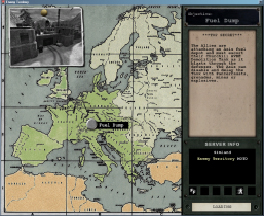

© 2003 Splash Damage, Ltd. All Rights Reserved.

| Wolfenstein: Enemy Territory Documentation © 2003 Splash Damage, Ltd. All Rights Reserved. |
|
|
{ map "fueldump" longname "Fuel Dump" type "wolfmp wolfsw wolflms" timelimit 30 axisRespawnTime 30 alliedRespawnTime 20 lmsbriefing "LMS blah." briefing "Loading screen blah." axiswintext "Final Axis text." alliedwintext "Final Allied text." mapposition_x 520 mapposition_y 585 } |
 |
| map: | The actual filename of the map to be loaded. |
| longname: | Used in the UI for loading screen purposes. |
| type: | Determines which game types are supported. "wolfmp" objective/campaign "wolfsw" stop watch "wolflms" Last man/medic standing. |
| timelimit, axisRespawnTime, alliedRespawnTime: | These need to be set in the script file for the map as these are UI display only. |
| mapposition_x, mapposition_y: | During the loading of the map a picture of Europe is displayed.
('gfx/loading/camp_map.tga') The picture of Europe is 1024x1024 pixels
wide/high. Each map is represented on this map with a pin showing where it is
located. The map position x/y co-ordinates are a pixel location for where the
game will put the pin. The UI puts 0,0 at the top left of the picture of
Europe.
The loading screenshot of the map is fixed in one location at the top left of the Europe map. The drawing pin is automatically added to the image by the UI. The map screenshots are located in the 'levelshots' folder. Each screenshot image is 256x256 pixels wide/high with an alpha channel to remove the outside border of the picture. The screenshot is based on a 4:3 ratio in game screenshot resized to 256x256. The UI automatically resizes the image back to 4:3 ratio again so that is why it must a 4:3 ratio image in the first place. Otherwise the image will look stretched, warped and wrong. |